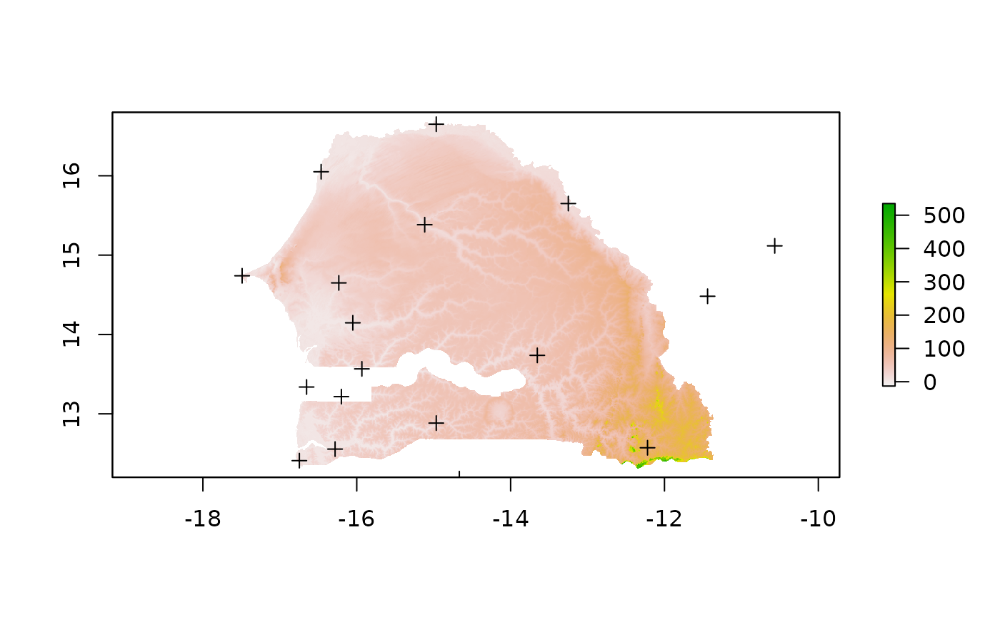
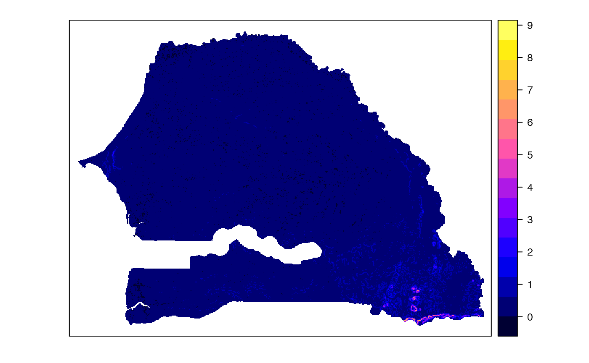
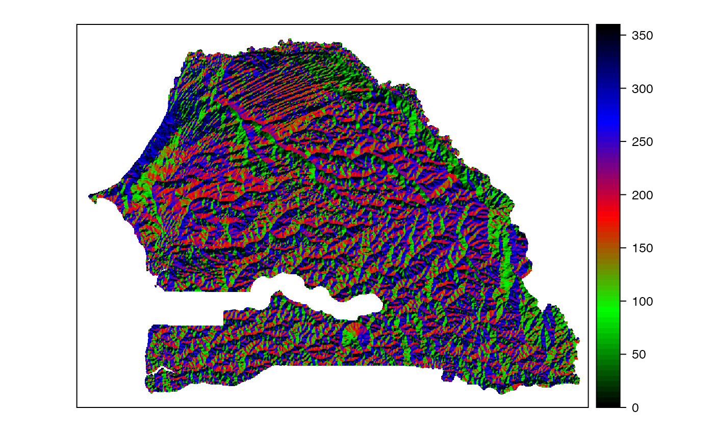
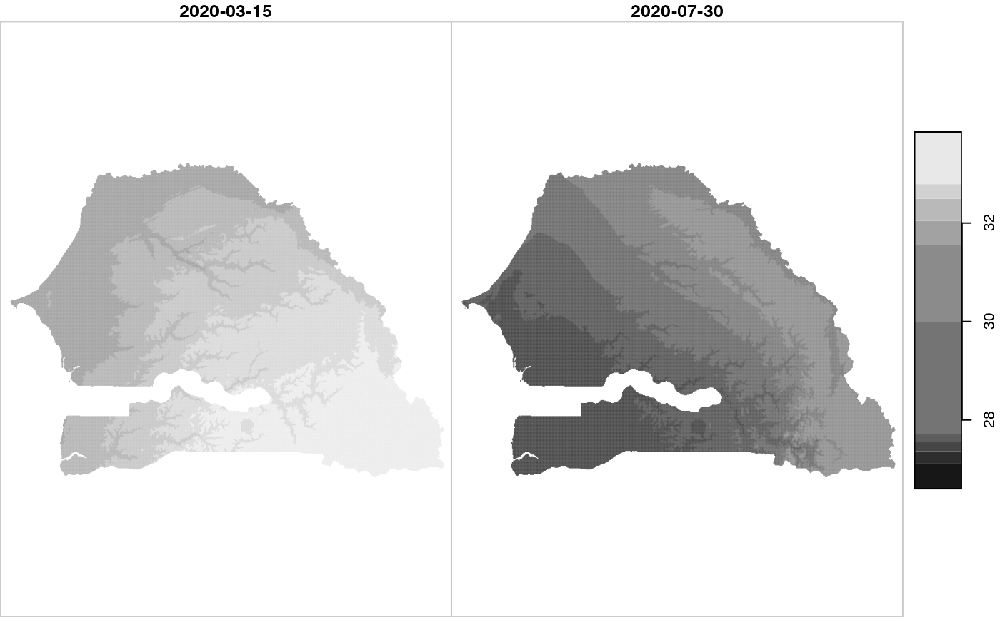
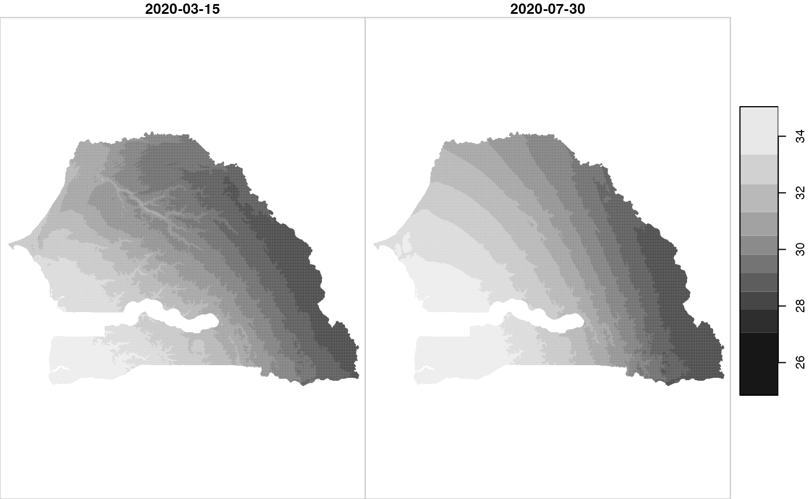
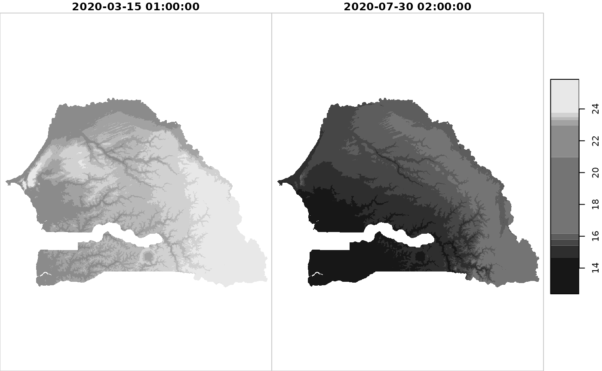
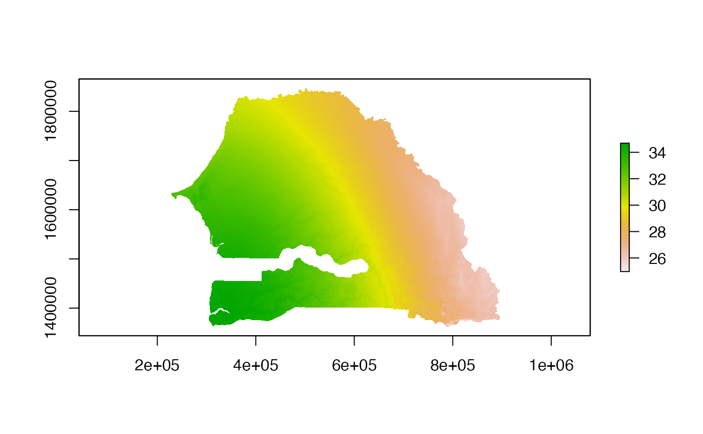

InterpolationSenegal.RmdIn this document we show how to obtain and process the topographic and weather data needed by package meteoland to conduct weather interpolation over a given country. We’ll use Senegal as case study.
We start by loading package worldmet, which provides access to over 30.000 weather stations across the globe:
In order to download weather data, we must first obtain the codes of the weather stations available for our study area. This can be done using function getMeta() from worldmet, which we use to know available weather stations for Senegal and neighbouring countries:
#Country codes for Senegal / Gambia/ Guinea/ Mali/ Mauritania /Guinea bissau
countries <- c("SG", "GA", "GV", "ML", "MR", "PU")
sg_st = getMeta(country=countries, plot = FALSE) Here are the stations downloaded:
sg_st## # A tibble: 47 × 12
## usaf wban station ctry st call latitude longitude `elev(m)` begin
## <chr> <chr> <chr> <chr> <chr> <chr> <dbl> <dbl> <dbl> <date>
## 1 6121… 99999 KIDAL ML NA GAKL 18.4 1.35 459 1957-03-05
## 2 6122… 99999 TOMBOU… ML NA GATB 16.7 -3.01 263 1949-04-11
## 3 6122… 99999 GAO ML NA GAGO 16.2 -0.005 265. 1949-04-01
## 4 6123… 99999 NIORO … ML NA GANR 15.2 -9.35 237 1949-04-06
## 5 6123… 99999 NARA/K… ML NA GANK 15.2 -7.28 265 1978-02-01
## 6 6123… 99999 YELIMA… ML NA NA 15.1 -10.6 100 1990-10-01
## 7 6125… 99999 KAYES/… ML NA GAKD 14.5 -11.4 51.5 1949-04-03
## 8 6126… 99999 AMBODE… ML NA GAMB 14.5 -4.08 276. 1949-04-03
## 9 6127… 99999 KITA ML NA GAKT 13.1 -9.47 334 1957-01-05
## 10 6127… 99999 SEGOU ML NA GASG 13.4 -6.15 289 1949-04-06
## # … with 37 more rows, and 2 more variables: end <date>, code <chr>Let’s assume that we want to interpolate weather for year 2020. We can download hourly weather station data for the selected stations and year 2020 using function importNOAA():
Some stations had missing data for year 2020 and were excluded from the output. Using function reshapeworldmet() from meteoland, we can reshape the hourly data of the remaining stations into daily data in form of an object SpatialPointsMeteorology:
spt_sen<-reshapeworldmet(hourData, output = "SpatialPointsMeteorology", verbose=FALSE)
spt_sen## Object of class SpatialPointsMeteorology
## Dates: 367 (initial: 2020-01-01 final: 2021-01-01)
## SpatialPoints:
## lon lat
## 612300-99999 -9.350000 15.23333
## 612330-99999 -7.283333 15.16667
## 612350-99999 -10.566667 15.11667
## 612570-99999 -11.439700 14.48167
## 612650-99999 -4.079561 14.51280
## 612700-99999 -9.466667 13.06667
## 612720-99999 -6.150000 13.40000
## 612770-99999 -4.833333 13.33333
## 612910-99999 -7.949944 12.53354
## 612930-99999 -5.466667 12.38333
## 612960-99999 -7.500000 11.41667
## 612970-99999 -5.683333 11.35000
## 614420-99999 -15.947956 18.09786
## 616000-99999 -16.463172 16.05076
## 616120-99999 -14.966667 16.65000
## 616270-99999 -15.116667 15.38333
## 616300-99999 -13.250000 15.65000
## 616410-99999 -17.490225 14.73971
## 616660-99999 -16.233333 14.65000
## 616790-99999 -16.051297 14.14688
## 616870-99999 -13.653122 13.73682
## 616950-99999 -16.281783 12.55562
## 616970-99999 -16.746125 12.41020
## 616980-99999 -14.966667 12.88333
## 616990-99999 -12.220333 12.57229
## 617010-99999 -16.652206 13.33796
## 617050-99999 -16.200000 13.21667
## 617070-99999 -15.566667 13.48333
## 617220-99999 -15.933333 13.56667
## 617310-99999 -14.216667 13.31667
## 617660-99999 -15.653681 11.89485
## 617690-99999 -15.483333 11.58333
## 617810-99999 -14.666667 12.18333## Warning in proj4string(x): CRS object has comment, which is lost in output; in tests, see
## https://cran.r-project.org/web/packages/sp/vignettes/CRS_warnings.html## Coordinate Reference System (CRS) arguments: +proj=longlat +datum=WGS84
## +no_defsWe can display the time series of one of the weather stations using
meteoplot(spt_sen, 5, "MeanTemperature", ylab ="Mean temperature (ºC)")While SpatialPointsMeteorology is the class that meteoland uses for point weather series, a special object of class MeteorologyInterpolationData needs to be created for interpolation, containing not only station weather but also station elevation and interpolation parameters. This can be obtained using the same function reshapeworldmet():
spt_mid<-reshapeworldmet(hourData, output = "MeteorologyInterpolationData",
proj4string = CRS(SRS_string ="EPSG:32628"),
verbose=FALSE)Note that we specified a coordinate reference system (CRS) to UTM28N (via EPSG initialization). This is because interpolation should be preferably conducted on a projected with easting and northing in meters.
To perform weather interpolation, we need the topography (elevation, slope, aspect) of the target area. We can use function getData() from package raster to download elevation data for Senegal:
## class : RasterLayer
## dimensions : 552, 756, 417312 (nrow, ncol, ncell)
## resolution : 0.008333333, 0.008333333 (x, y)
## extent : -17.6, -11.3, 12.2, 16.8 (xmin, xmax, ymin, ymax)
## crs : +proj=longlat +datum=WGS84 +no_defs
## source : SEN_msk_alt.grd
## names : SEN_msk_alt
## values : -13, 535 (min, max)The previous function returns a RasterLayer grid object in geographic coordinates, which we can plot along with the weather station point locations:

In order to estimate slope and aspect it is important that the spatial reference system is in coordinates that have meters as units. We can reproject our raster to 28N UTM using function projectRaster() from package raster:
elev_utm = projectRaster(elev_raster, crs = CRS(SRS_string ="EPSG:32628"))
elev_utm## class : RasterLayer
## dimensions : 566, 774, 438084 (nrow, ncol, ncell)
## resolution : 898, 922 (x, y)
## extent : 212597.7, 907649.7, 1343873, 1865725 (xmin, xmax, ymin, ymax)
## crs : +proj=utm +zone=28 +datum=WGS84 +units=m +no_defs
## source : memory
## names : SEN_msk_alt
## values : -6.424461, 506.9934 (min, max)Package meteoland allows deriving slope and aspect from elevation (i.e. DEM) data when builidng objects of class SpatialGridTopography. To this aim, we need first to cast our RasterLayer object into a SpatialGridDataFrame and then call function SpatialGridTopography():
elev_sgd = as(elev_utm, "SpatialGridDataFrame")
sgt <- SpatialGridTopography(elev_sgd@grid, elevation = elev_sgd$SEN_msk_alt,
proj4string = proj4string(elev_sgd))## Warning in proj4string(elev_sgd): CRS object has comment, which is lost in output; in tests, see
## https://cran.r-project.org/web/packages/sp/vignettes/CRS_warnings.html
sgt## Object of class SpatialGridTopography
## Grid topology:
## cellcentre.offset cellsize cells.dim
## s1 213046.7 898 774
## s2 1344334.4 922 566## Warning in proj4string(x): CRS object has comment, which is lost in output; in tests, see
## https://cran.r-project.org/web/packages/sp/vignettes/CRS_warnings.html## Coordinate Reference System (CRS) arguments: +proj=utm +zone=28
## +datum=WGS84 +units=m +no_defs
##
## Topography summary:
## elevation slope aspect
## Min. : -6.42 Min. :0.00 Min. : -1.0
## 1st Qu.: 30.42 1st Qu.:0.06 1st Qu.:104.2
## Median : 47.81 Median :0.15 Median :196.3
## Mean : 52.81 Mean :0.22 Mean :191.6
## 3rd Qu.: 62.26 3rd Qu.:0.31 3rd Qu.:287.4
## Max. :506.99 Max. :8.55 Max. :360.0
## NA's :199234 NA's :199234 NA's :199234The spatial grid contains many grid cells falling on the sea. We can exclude them by transforming our topography to class SpatialPixelsTopography:
spxt <- as(sgt, "SpatialPixelsTopography")This new object has almost half the number of pixels of the original grid:
dim(coordinates(sgt))## [1] 438084 2
dim(spxt@coords)## [1] 238850 2We can check the slope and aspect calculated by meteoland using plot functions:
spplot(spxt, "slope")
spplot(spxt, "aspect")
We are now ready to perform the interpolation of weather over the study area. Since our spatial target are grid pixels, we need to call function interpolationpixels with: (a) our object MeteorologyInterpolationData; (b) our target topography (i.e. in this case SpatialPixelsTopography); and (c) a vector of dates (here two distinct days) among the period with available data (year 2020):
mid <- interpolationpixels(spt_mid, spxt, dates=as.Date(c("2020-03-15", "2020-07-30")))## Warning in proj4string(pixels): CRS object has comment, which is lost in output; in tests, see
## https://cran.r-project.org/web/packages/sp/vignettes/CRS_warnings.html## Warning in proj4string(object): CRS object has comment, which is lost in output; in tests, see
## https://cran.r-project.org/web/packages/sp/vignettes/CRS_warnings.html## Warning in interpolationpixels(spt_mid, spxt, dates = as.Date(c("2020-03-15", :
## Boundary box of target grid is not within boundary box of interpolation data
## object.## Interpolating day '2020-03-15' (1/2) - done.
## Interpolating day '2020-07-30' (2/2) - done.A warning is launched because some grid points (hopefully not many) are outside the boundary box of the station data. At this point the resulting data can be exported via netCDF, displayed using function spplot or transformed into other spatio-temporal spatial structures. Here we will first transform the output to package stars:
mid_stars <- as(mid, "stars")Now we use plot functions defined for stars objects to display mean daily temperature interpolation estimates:
plot(mid_stars["MeanTemperature"])
As well as those for relative humidity:
plot(mid_stars["MeanRelativeHumidity"])
And radiation in MJ/day:
plot(mid_stars["Radiation"]) Note that in the case of date “2020-07-30”, there was a prediction of rain in some areas, which decreases the estimated daily radiation.
Finally, we can export the interpolation result back on a netCDF, for its use in other software:
writemeteorologypixels(mid, "foo.nc", overwrite = T, verbose=T)##
## Creating 'foo.nc'.## Warning in proj4string(object): CRS object has comment, which is lost in output; in tests, see
## https://cran.r-project.org/web/packages/sp/vignettes/CRS_warnings.html##
## Closing 'foo.nc'.For example, this can be read from package raster:
a = raster("foo.nc", var = "MeanRelativeHumidity", band = 2)
a## class : RasterLayer
## band : 2 (of 2 bands)
## dimensions : 566, 774, 438084 (nrow, ncol, ncell)
## resolution : 898, 922 (x, y)
## extent : 212597.7, 907649.7, 1343873, 1865725 (xmin, xmax, ymin, ymax)
## crs : NA
## source : foo.nc
## names : MeanRelativeHumidity
## z-value : 2020-07-30
## zvar : MeanRelativeHumidityNote that the CRS is not read correctly. We can, however, plot the data.
plot(a)